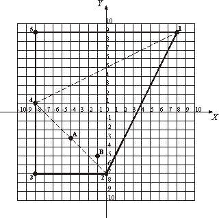

Home Page
F.A.Qs
Statistical Charts
Past Contests
Scheduled Contests
Award Contest
| Online Judge | Problem Set | Authors | Online Contests | User | ||||||
|---|---|---|---|---|---|---|---|---|---|---|
| Web Board Home Page F.A.Qs Statistical Charts | Current Contest Past Contests Scheduled Contests Award Contest | |||||||||
|
Language: Frontier
Description Lilliputian frontier is a convex polygon with non-zero area. The vertices of this polygon are guard towers, which are connected by straight lines. This frontier is too long and expensive for Lilliputia to maintain; therefore the Lilliputian government has decided to revise it to make it shorter. However, they don't want to build new guard towers, but to use existing ones as a part of a new frontier.
Each day frontier guards inspect the frontier. They go from one guard tower to the next one, traversing the frontier clockwise. Guard towers are numbered from 1 to N according to this inspection order. Frontier revision should not change this way of inspection and the area of Lilliputia shall remain non-zero. For example, the frontier that is shown on the picture (axes are in kilometer scale) is traversed by 1 - 2 - 3 - 4 - 5 - 1 route, which is 57.89 kilometers long. To make the frontier as short as possible Lilliputia should revise it so that the frontier is traversed by 2 - 3 - 4 - 2 route, thus reducing its length to 27.31 kilometers. However, Lilliputia has a number of historical monuments which are its major pride. The historical monuments shall be kept inside Lilliputia at any cost and they should not end up on the frontier. So, the task is to design the shortest frontier that will preserve all historical monuments inside Lilliputia. On the sample picture two historical monuments marked "A" and "B" are shown. The desire to keep them inside Lilliputia will lead to the shortest frontier with a traverse path 1 - 2 - 3 - 4 - 1 having 51.78 kilometers in length. Input The first line of the input file contains two integers N and M, separated by a space. N (3 <= N <= 50) is a total number of guard towers on the Lilliputian frontier. M (0 <= M <= 1000) is a total number of historical monuments that are situated inside Lilliputia.
Next N lines contain guard towers' coordinates in a clockwise order followed by M lines that contain historical monuments' coordinates. All coordinates are represented as two integers (for X and Y correspondingly) separated by a space. Coordinates are given in a kilometer scale and each coordinate does not exceed 10000 by an absolute value. All guard towers are located at distinct points. Output Write to the output file a single real number - the minimal possible length of the Lilliputian frontier (in kilometers) accurate to two digits to the right of the decimal point. Sample Input 5 2 8 9 0 -7 -8 -7 -8 1 -8 9 -4 -3 -1 -5 Sample Output 51.78 Source |
[Submit] [Go Back] [Status] [Discuss]
All Rights Reserved 2003-2013 Ying Fuchen,Xu Pengcheng,Xie Di
Any problem, Please Contact Administrator